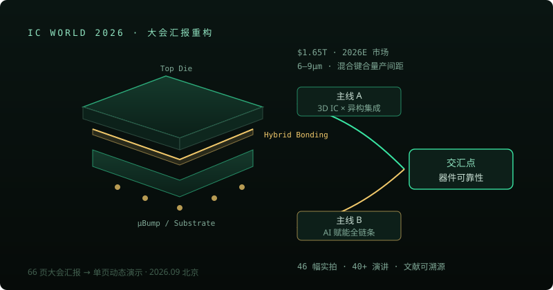

Industry Report · Live
IC World 2026 大会汇报 · 驭智拓芯途
原 PPT 66 页重构为单页动态演示：两条主线——3D IC×异质异构集成、AI 赋能全链条——交汇于器件可靠性。

素材与方法论
以 2026 年 9 月北京微电子国际研讨会七场论坛、40+ 场演讲与 46 幅实拍为一手素材， 结合 WSTS 市场数据、IEEE HIR 路线图、JEDEC 标准与 Nature·JSSC·TED 文献交叉验证—— 每个判断都标注来源，可溯源、可复核。
核心判断
半导体第一次不再只被制程定义：市场以 +108% 冲破 1.6 万亿美元（存储超级周期）； 混合键合间距量产进入 6–9µm、向 3µm 进发，互连密度取代晶体管密度成为第一变量； AI 把设计、验证、测试的方法学整体重写（验证循环 5 周→<1 天，退化预测 2.3h→0.8ms）—— 而器件可靠性是两条主线交汇处的最大蓝海。
章节结构
七章主线 + 附录：格局（万亿美元周期与政策定调）→ 3D IC×异构集成 → AI 全链 → AI×可靠性深读 → 验证与投资 → 现场实录（实拍证据链）→ 文献索引。 光标驱动的芯片立体拆分、滚动路线图与图表数据卡贯穿全页。
展示重点
这个项目体现的是产业调研与叙事表达能力：一手参会素材 + 多源文献交叉验证 + 单页动态演示的重构——把一场行业大会变成一份可公开访问、有据可查的产业判断报告。